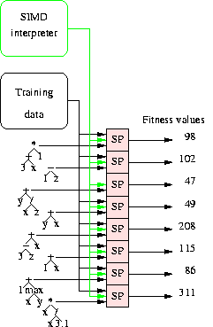

class: center, middle, inverse name: inverse layout: true --- # A Many Threaded CUDA Interpreter for Genetic Programming William B. Langdon, 2010 --- layout: false Agenda ====== .my-text-larger[ 1. Abstract 1. Background * What is Reverse Polish Notation? * What is Genetic Programming? * What a Multiplexor? 1. Introduction 1. Genetic Programming Interpreter 1. Examples 1. Methodology 1. Results 1. Conclusion 1. Questions ] --- template:inverse Abstract ======== ### The paper presents an **interpreter** for the parallel evaluation of the whole Genetic Programming population of reverse polish notation expressions --- layout: false Background ========== .left-column[ ### What is Reverse Polish Notation? ] .right-column[ * In RPN the operators follow their operands * For instance `3 + 4` is `3 4 +` * It removes the need for parentheses * `5 * (3 - 4)` is converted to `5 3 4 - *` * Reverse Polish Notation has been found to lead to **faster** calculations * Interpreter algorithm: ```bash while there is input tokens if the token is a value push it into the stack else # the token is an operator # n is the number of args that the operator takes pop n values from the stack evaluate the operator with the values as arguments push the result back to the stack ``` ] --- Background ========== .left-column[ ### What is Reverse Polish Notation? ### What is Genetic Programming? ] .right-column[ * GP is a technique whereby computer programs are evolved using an **evolutionary algorithm** ] --- Background ========== .left-column[ ### What is Reverse Polish Notation? ### What is Genetic Programming? ] .right-column[ * Tree-based representation * The **fitness** of each individual could be calculated independently in **parallel** ] --- Background ========== .left-column[ ### What is Reverse Polish Notation? ### What is Genetic Programming? ### What is Multiplexor? ] .right-column[ * A Multiplexor is a software or hardware that for many inputs return only one output. * The output is based on the input and a selector * Several applications in electronics and signal processing and others ] --- Background ========== .left-column[ ### What is Reverse Polish Notation? ### What is Genetic Programming? ### What is Multiplexor? ] .right-column[ ] --- template:inverse ### For the Multiplexor problem the question is: ## Given the **input** and the expected **output**, <br/> which is the program? --- Introduction ============ ### There are two main approaches for running genetic programming in GPU: 1. **Compile** the evolved programs and running multiple fitness cases in parallel 1.1 Overhead of running the compiler in the host 2. **Interpreting** multiple programs in parallel. 2.1 Can run the program immediately 2.2 The interpreted code is slower than the optimised compiler generated machine code 2.3 This is the approach used in this work 3. Mixtures are possible --- Introduction ============ ### Interpreting many programs simultaneously .left-column[  ] .right-column[ * Data is pushed onto stack before operations pop them (i.e. reverse polish. x+y → x y +) * The tree is stored as linear expression in reverse polish. * Same structure on CPU as GPU. * Avoid explicit format conversion when population is loaded onto GPU. * Genetic operations act on reverse polish: * random tree generation (eg ramped-half-and-half) * subtree crossover * 2 types of mutation * Requires only one byte per leaf or function. * So large populations (millions of individuals) are possible. ] --- Genetic Programming Interpreter =============================== .left-column[ ] .right-column[ * Variable (terminal): push onto stack * Function: pop arguments, do operation, push result back * 1 stack per program * All stacks in **shared memory** ] --- Boolean Operators ================= ### AND, OR, NAND, NOR --- #Examples ### 6-mux problem possible solution I --- #Examples ### 6-mux problem possible solution II --- #Examples ### 6-mux problem possible solution III --- #Examples ### 6-mux Ideal solution --- Methodology ============ ### **Interpret** and **evaluate** the population (of trees) in **parallel** --- #Methodology .my-text-larger[ * Put stack in fast shared memory * The delay in reading from off-chip memory is hundreds of times more than access to on-chip memory. * Randomised testing * Choice between sequential and parallel * Use 1↔256 threads per block * Reduce by parallel sum into one fitness value. * Siebert's bit count (replaces 32 loops) * 1 Program in fast read-only global memory * Interprets 261,000,000,000 GP primitives per sec * (670 billion per second sustained peak) * GPU is only used for fitness evaluation * Doubtless some efficiencies could be made to reduce the host side overhead. ] --- # The interpreter function ````c __device__ inline int runprog(unsigned char* const Pop,const unsigned int prog, const unsigned int test32, const int LEN) { #define AND(A,B) ((A) & (B)) #define OR(A,B) ((A) | (B)) #define SETOPCODE const optype opcode = Pop[PC+(prog*LEN)] #define OPCODE opcode #define push(x) {stack(SP) = x; SP++;} settop; setstack; int SP = 0; for(unsigned int PC = 0; /*PC < LEN-1*/; PC++){ SETOPCODE; if(OPCODE==OPNOP) break; const int type = (OPCODE>>5); if(type==(firstinput>>5)) {push(train[OPCODE & 7]);} //OP1 else if(type==(inputd5>>5)) { const unsigned int t = (OPCODE & 31); //ninputs <= 37bits const unsigned int t2 = test32 & pow2[t]; push(train2[t2 == pow2[t]]); //OP1 } else { const unsigned int sp1 = stack(SP-1); const unsigned int sp2 = stack(SP-2); SP -= 2; if(type==(OPAND>>5)) {push(AND(sp1,sp2));} else if(type==(OPOR>>5)) push(OR(sp1,sp2)); if(OPCODE==OPNAND||OPCODE==OPNOR) stack(SP-1) = ~stack(SP-1); } }return 0;} ```` --- ## Solutions are found in generations 423 (20-Mux) and 2,866 (37-Mux). <img src="generationsvsfitness.png" height="450"/> --- ## Performance vs Threads. **Divergence is a major source of inefficiency** --- Conclusion ========== .my-text-larger[ * Solved the 20-bits Multiplexor * 1,048,576 fitness cases * Has never been solved by tree GP before * Previously estimated time: more than **4 years** * GPU has consistently done it in less than **an hour** * Solved the 37-bits Multiplexor * 137,438,953,472 fitness cases * Has never been attempted before * GPU solves it in under **a day** ] --- # Questions .my-text-larger[ 1. How is generated the training data? 2. How Ramped-half-and-half method generates the trees? 3. What is Siebert's bit count? ] --- template: inverse #Thanks